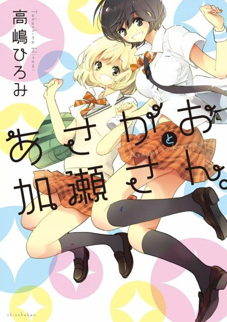

Your Light: Kase-san and Morning Glories
キミノヒカリ ～あさがおと加瀬さん。～
The anime takes the story to Unclear.
7.1AniList score
—Animeter, no votes yet
1episode
Anime finished. Where does the manga pick up?
StatusNo source yet
We looked for where the anime ends in the manga but found no source we trust yet. The manga is 25 chapters, finished.